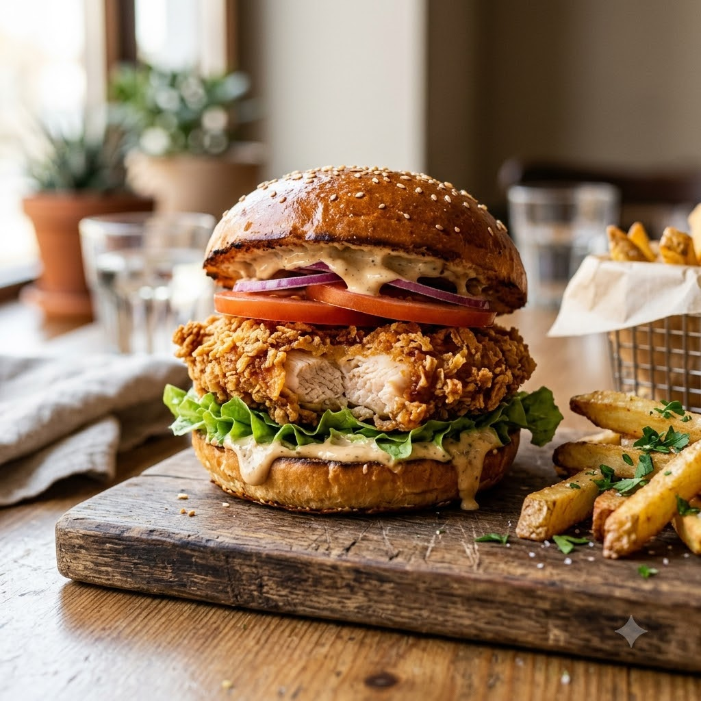

Airfryer – Fry 200°C 18 min — Serves 4
Prep ahead: Chill the shaped patties for at least 30 minutes (or freeze for 10 minutes) before air-frying so they hold together and stay juicy.
Ingredients
Method
Tip: Press a small dimple into the centre of each patty before cooking — chicken patties puff up in the middle as they cook, and the dimple keeps them flat.